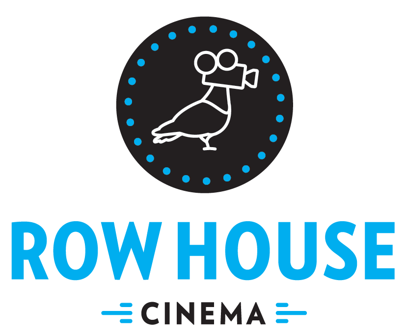

Arsenal Bowl Although I have never been here, this place looks really cool from the outside. And after some research, I think the inside follows suit. They offer affordable deals like $8 all you can bowl nights, 50 cent shoe rentals and bowling alley food. You can enjoy their DJs, live bands, and game nights with a crowd that's 21 and up. I have to wait a little over a year to get in to one of the 21+ events, but I am interested in planning a trip with my friends. It seems like a fun place to get away from the usual things to do in Oakland.
Arsenal Bowl Although I have never been here, this place looks really cool from the outside. And after some research, I think the inside follows suit. They offer affordable deals like $8 all you can bowl nights, 50 cent shoe rentals and bowling alley food. You can enjoy their DJs, live bands, and game nights with a crowd that's 21 and up. I have to wait a little over a year to get in to one of the 21+ events, but I am interested in planning a trip with my friends. It seems like a fun place to get away from the usual things to do in Oakland.
 Row House Cinema as mentioned on the first page, this is what originally brought us to Lawrenceville. Its atmosphere is hard to describe. We walked in under its brightly lit marquee to a dim hallway that led us to concession stand. I got my usual movie snack, sour patch kids. They offered beer and popcorn and other movies concessions. After we bought our tickets, we walked in to a small theater, much like one we have in my home town. Each week they play a specific set of films. They were showing “Welcome to America” the night we were there. I was pleased that there were few previews, and the movie started promptly. The theater laughed together at the funny parts. I could tell that many of them had seen it before because of their reactions to what seemed like their favorite scenes - laughed loud before it even happened. It did not match my mom's sense of humor, but we like to do things for the experience - and an experience it was. With Halloween coming up, they are showing a handful of holiday-related movies to get you into the spirit. It reminded me of the one at home - the only difference being that the Cinema house had hipster vibes and a partner store, Bierfest.